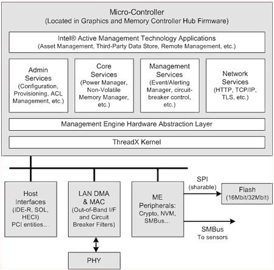
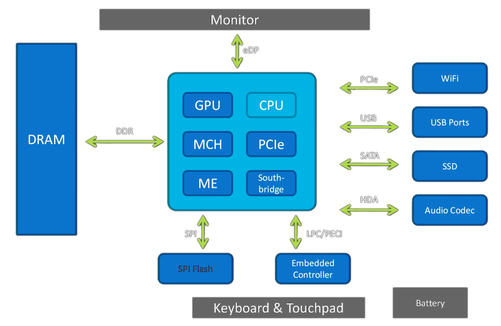
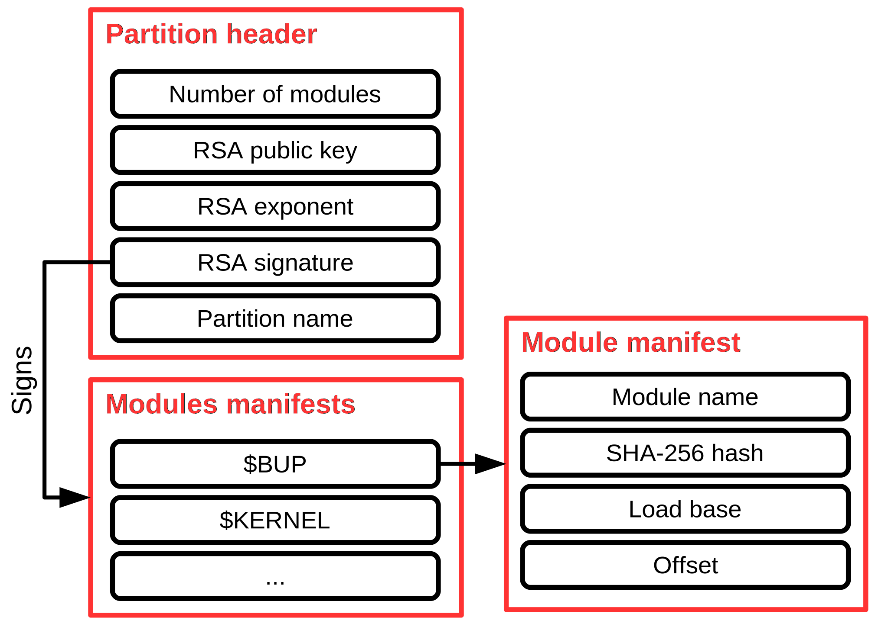

<!doctype html>
<html lang="en">

  <head>
    <meta charset="utf-8">

    <title>coreboot POuL Workshop</title>

    <meta name="description" content="coreboot POuL Workshop">
    <meta name="author" content="Nicola Corna">

    <meta name="apple-mobile-web-app-capable" content="yes" />
    <meta name="apple-mobile-web-app-status-bar-style" content="black-translucent" />

    <meta name="viewport" content="width=device-width, initial-scale=1.0, maximum-scale=1.0, user-scalable=no, minimal-ui">

    <link rel="stylesheet" href="reveal.js/css/reveal.css">
    <link rel="stylesheet" href="reveal.js/css/theme/night.css" id="theme">
    <link href='https://fonts.googleapis.com/css?family=Montserrat' rel='stylesheet' type='text/css'>

    <!-- Printing and PDF exports -->
    <script>
      var link = document.createElement( 'link' );
      link.rel = 'stylesheet';
      link.type = 'text/css';
      link.href = window.location.search.match( /print-pdf/gi ) ? 'reveal.js/css/print/pdf.css' : 'reveal.js/css/print/paper.css';
      document.getElementsByTagName( 'head' )[0].appendChild( link );
    </script>

    <!--[if lt IE 9]>
    <script src="reveal.js/lib/js/html5shiv.js"></script>
    <![endif]-->

    <!-- For syntax highlighting -->
	<link rel="stylesheet" href="reveal.js/highlight.js/src/styles/solarized-light.css" id="highlight-theme">
  </head>

  <style type="text/css">
  .reveal pre code {
    color: #3f3f3f;
    background: #eee none repeat scroll 0% 0%;
    font-size: 1.1em;
    line-height: 1.3em;
    border-radius: .2em;
  }
  body {
    background: #ffffff;
    background-color: #ffffff;
  }
  .reveal {
    color: #000000;
  }
  .reveal h1,
  .reveal h2,
  .reveal h3,
  .reveal h4,
  .reveal h5,
  .reveal h6 {
    color: #000000;
  }
  .reveal a {
    color: #444444;
  }
  .reveal section img {
    background: none;
    border: none;
  }
  </style>

  <body>
    <div class="reveal">
      <section data-state="orange">
      <!-- Any section element inside of this container is displayed as a slide -->
      <div class="slides">
        <!-- Slides are separated by newline + three dashes + newline, vertical slides identical but two dashes -->
			<section data-markdown data-separator="^\n---\n$"
			         data-separator-vertical="^\n--\n$">
				<script type="text/template">


16 Gennaio 2017<br>
NECSTLab

---

## Me


<h3><b>Federico Izzo</b></h3>
<h4> [**federico.izzo42@gmail.com**](mailto:federico.izzo42@gmail.com) </h4>
<h4> [**github.com/Nimayer**](https://github.com/Nimayer)</h4>

---

## A thanks to Nicola Corna
### Who introduced me to coreboot and did the great part of the work on  Intel ME

<!-- <div style="float:right; width:50%"> -->


<h4> [**nicola@corna.info**](mailto:nicola@corna.info) </h4>
<h4> [**github.com/corna**](https://github.com/corna)</h4>
<!-- </div> -->

---

## Index

 * <a href="#/4">**What is coreboot?**</a>
 * <a href="#/28">**How do I install it?**</a>
 * <a href="#/46">**Intel ME**</a>

---

## What is coreboot?

__coreboot__ is a project meant to replace the *proprietary firmware*
(BIOS or UEFI) present in most computers

We could say that coreboot is an *open source BIOS*

---

## However coreboot is not a proper BIOS

* A __BIOS__ firmware:
  - performs hardware initialization
  - provides runtime calls for the OS
* __coreboot__ does just the hardware initialization

Modern Windows versions and Linux don't use BIOS calls anymore
  - You can still run DOS using SeaBIOS on coreboot

---

## Benefits

 * FOSS software<!-- .element: class="fragment" -->
  - Safer<!-- .element: class="fragment" -->
  - Hackable<!-- .element: class="fragment" -->
  - BIOS backdoor free<!-- .element: class="fragment" -->
 * Very fast! (0.5/1 s from off to Linux kernel boot)<!-- .element: class="fragment" -->
 * Written almost completely in 32-bit C language<!-- .element: class="fragment" -->
  - Unlike commercial BIOSes that are written in 16-bit assembler<!-- .element: class="fragment" -->
 * Follows <!-- .element: class="fragment" -->the rule "_initialize the hardware, then get out of the way_"

---

## Downsides

 * Few hardware supported<!-- .element: class="fragment" -->
 * Complex compilation<!-- .element: class="fragment" -->
 * Hard to install<!-- .element: class="fragment" -->
 * New CPU generations make development and installation harder<!-- .element: class="fragment" -->
  - Intel Boot Guard<!-- .element: class="fragment" -->

---

## How does it work?

coreboot code is split in four main stages:
 * Bootblock
 * Romstage
 * Ramstage
 * Payload

---

## Bootblock

In this stage coreboot:
 * Reads CMOS configuration
 * Decides in which mode to start (_Normal_ or _Fallback_)

---

## Romstage

This is the most critical stage, here coreboot initializes RAM memory and Intel ME.
 * Initializes debugging peripherals
 * Initializes the chipset
 * Configures the memory
 * Allocates the shared memory Intel ME requires

---

## Ramstage

During this stage coreboot initializes the remaining peripherals and then jumps into the payload.

After this stage coreboot has done its work and won't execute any code until __suspension__ or __shutdown__.

---

## Payloads

Now that the hardware is initialized we can let another software
continue the boot process.

The most interesting payloads are:
 * SeaBIOS
 * Tianocore (UEFI)
 * GRUB
 * Linux

---

## Payloads

There are also __secondary payloads__ that can be booted:
 * nvramcui: *configuration utility*
 * coreinfo: *information dump*
 * Memtest86+: *memory test*
 * Tint: *tetris*
 * GRUB invaders: *you get the idea*

---

## SeaBIOS


---

## SeaBIOS

A complete x86 BIOS implementation.

coreboot + SeaBIOS provides you a *complete BIOS system*,
good starting point for a coreboot setup.

---

## Tianocore


---

## Tianocore

Tianocore is Intel's UEFI *reference implementation*, released under open source licenses.

Duet is part of Tianocore, it should give you *UEFI support on coreboot*

if you are able to make it work, I failed.

Tianocore can also include SeaBIOS as CSM,
to get an UEFI + BIOS system.

---

## GRUB


---

## GRUB

You already know GRUB.

Probably you don't know that GRUB can be run directly from coreboot, without
a BIOS.

This is due to the fact that Linux does not use BIOS legacy calls.

---

## GRUB

It has some advantages with respect to SeaBIOS:
 * Faster
 * Has less code
 * Built-in crypto
  - Can unlock LUKS volumes
  - Can verify kernel/initramfs signatures

---

## Linux


---

## Linux

coreboot can boot directly a Linux Kernel from the onboard ROM.

Has some drawbacks: you need to flash again the ROM each time you want
to update the kernel or even change the cmdline.

#### It gives you even more flexibility than GRUB,

For example look at the [HEADS bootloader](https://github.com/osresearch/heads)
which uses tpm for firmware and filesystem *measurement*.

---

## nvramcui


An utility to change CMOS configuration.

---

## coreinfo


An utility to view system info.

---

## Memtest86+


A tool to check the RAM health.

---

## TinT (Tint is not Tetris)


TETRIS!!!

---

## GRUB invaders


Space invaders!!!

---

# coreboot: how do I install it?

---

### The installation is divided into four steps:
- <a href="#/30">Prepare the building environment</a>
- <a href="#/34">Dump your original BIOS</a>
- <a href="#/40">Compile coreboot</a>
- <a href="#/44">Flash the coreboot image</a>

---

## The building environment
[here](https://www.coreboot.org/Build_HOWTO) you can find the official guide,
that follows a funny order.

### What you have to do is:
- Clone the coreboot repository
```
$ git clone --recursive http://review.coreboot.org/p/coreboot
$ cd coreboot
```
- Compile the *cross-compiler*, coreboot runs in 32bit mode
```
make crossgcc-i386 CPUS=4
```
- Configure coreboot
```
make menuconfig
```

---

## Try it with QEMU!
### It is possible to try coreboot+payload on QEMU before messing with the hardware
Do `make menuconfig` to configure coreboot

check that the *Mainboard* menu looks like this:
- vendor: Emulation
- model: QEMU x86 q35/ich9

Leave the menuconfig and do `make -jN` to compile

The `coreboot.rom` file inside the `build` subfolder is your image

You can run QEMU using
```
qemu-system-x86_64 -M q35 -bios build/coreboot.rom
```

---

### To build an image for your laptop
you will need a *dump* of the flash content, to extract:
- Intel Flash Descriptor
- Intel ME Firmware
- Gigabit Ethernet Firmware
- Intel GPU VBIOS (optional)

---

### What there is inside an Intel PC flash:


The Intel ME region is accessible __only by ME itself__,
also, the BIOS region can be __write-protected__.

However it is possible to read or write the entire flash
by connecting an external programmer to the flash chip.

---

## Dumping the hard way

The flash chip uses the __SPI__ protocol,

So we can read its content using the SPI interface of a Raspberry Pi or
a similar board with 3.3V GPIO


---

### Find the flash
<div style="float:left; width:50%">
  <p> SOIC-8 </p>
  

  <p> DIP-8 </p>
  
</div>

<div style="float:right; width:50%">
  <p> SOIC-16 </p>
  

  <p> PLCC-32 </p>
  
</div>

---

### Clips!

You can find the flash chip __pinout__ inside its datasheet

You can use these to connect the chip
<div style="float:left; width:50%">
  <p>SOIC-8 testclip</p>
  
</div>

<div style="float:right; width:50%">
  <p>SMD clips</p>
  
</div>

I found the SMD clips more reliable

---

### Connect the wires
First of all __unplug your charger and remove the battery__
<div style="float:left; width:50%">
  <p>Raspberry Pi pins</p>
  </div>

<div style="float:right; width:50%">
  <p>to be connected in this order</p>
  <table>
						<thead>
							<tr>
								<th>RPi</th>
								<th>Flash</th>
							</tr>
						</thead>
						<tbody>
							<tr>
								<td>GND</td>
								<td>GND</td>
							</tr>
							<tr>
								<td>CS0</td>
								<td>CS</td>
							</tr>
							<tr>
								<td>SPI0 SCLK</td>
								<td>CLK</td>
							</tr>
              <tr>
								<td>3.3V PWR</td>
								<td>3.3V</td>
							</tr>
              <tr>
								<td>SPI0 MISO</td>
								<td>MISO</td>
							</tr>
              <tr>
								<td>SPI0 MOSI</td>
								<td>MOSI</td>
							</tr>
						</tbody>
					</table>
</div>


---

### Flashrom

Compile __flashrom__ from the [github repo](https://github.com/flashrom/flashrom)
or install it from your package manager

The Raspberry Pi command is:
```
flashrom -p linux_spi:dev=/dev/spidev0.0 -r dump.bin
```
Flashrom may ask you to specify your chip model if he cannot detect it
automatically, you can use the option `-c <chipname>`

(e.g. on a Thinkpad X220 the option would be `-c W25Q64.V`)

A good practice is to make two dumps and compare the results (using `diff`)
to be more safe

---

### Extract the blobs

The utility `ifdtool` included in the coreboot tree can be used to extract our dump

- Compile the utility
```
cd coreboot/util/ifdtool
make
```
- Extract the flash regions
```
mkdir extracted_dump
cp dump.bin extracted_dump/
./util/ifdtool/ifdtool -x extracted_dump/dump.bin
```
- You will find the extracted flash regions in the folder:
  * BIOS
  * ME blob
  * GbE blob
  * Flash Descriptor

---

## Configuration
coreboot uses a Linux kernel like configuration

Use `make menuconfig` to open the configuration tool
and the __help__ button to get a description of the elements.

I will show you a standard configuration, it's up to you to try the other
settings (hint: normal/fallback)

---

### Configuring coreboot pt.I

The main options to set are:
- Mainboard
  - Mainboard vendor: *your computer brand*
  - Mainboard model: *your computer model*
  - Rom chip size: *the flash chip size*
- Chipset
  - Include microcode in CBFS: *Generate from tree*
  - Add Intel descriptor.bin file: *we extracted it before*
  - Add Intel ME/TXT firmware:     *same thing*
  - Add gigabit ethernet firmware: *same thing*

---

### Configuring coreboot pt.II

- Devices
  - Use native graphics initialization: *usually works*
  - Enable PCIe Clock Power Management: *good idea*
- Display
  - Keep VESA framebuffer: *graphical mode instead of text*
- Generic Drivers
  - Enable TPM support
- Payload
  - Add a payload: *SeaBIOS or <a href="#/12">one of your choice</a>*
  - Secondary Payloads: *see* <a href="#/13">*here*</a>

---

### Compiling
To compile run `make -jN`

The resulting image will be in `coreboot/build/coreboot.rom`

---

## Flashing coreboot

To flash the image the first time we need to use the SPI connection, as we did for the <a href="#/34">*dump*</a>

From the next time we can flash directly __from linux__
because in coreboot the write protection of the BIOS/ME blob is optional

The command to flash using a Raspberry Pi is:
```
flashrom -c <chipname> -p linux_spi:dev=/dev/spidev0.0 -w coreboot.rom
```

---

### force_I_want_a_brick

Once you have booted Linux, you can update coreboot using:
```
flashrom -c <chipname> -p internal:laptop=force_I_want_a_brick -w coreboot.rom
```
After updating coreboot, the best thing is to __turn off completely your computer__
in order to run the newly flashed BIOS/ME blob

---

# Intel ME

---

## Intel ME

Intel Management Engine is a __secondary processor__ integrated in all Intel motherboard chipsets
from 2008 onwards.

It is mainly used for Intel AMT (Advanced Management
Technology) on CPUs with vPRO enabled.

Intel AMT is an *out-of-band* management technology, offering:
 * network tunnel over untrusted network<!-- .element: class="fragment" -->
 * remote power control<!-- .element: class="fragment" -->
 * remote KVM<!-- .element: class="fragment" -->
 * network packet filter<!-- .element: class="fragment" -->
 * PAVP for DRM media<!-- .element: class="fragment" -->
 * <!-- .element: class="fragment" -->[more ...](https://en.wikipedia.org/wiki/Intel_Active_Management_Technology#Features)

---

### Intel ME



---

### Intel ME



---

### ME capabilities

Intel ME has access to:
 * Any memory region<!-- .element: class="fragment" -->
 * The PCI bus<!-- .element: class="fragment" -->
 * The GPU<!-- .element: class="fragment" -->
 * Wired and wireless NIC (with dedicated MAC address)<!-- .element: class="fragment" -->
 * more ...<!-- .element: class="fragment" -->

---

### The firmware

Its firmware is proprietary, so not security auditable, and it's signed with RSA
by Intel

It's not encrypted but a lot of modules are Huffmann compressed with unknown
hardware dictionary, so their code cannot be easily accessed.

---

# How do I disable it?

---

### How do I disable it?
Until 1st generation Core CPUs (Nehalem) it was possible to remove the ME
firmware by modifying the *Intel Flash Descriptor*
(see [the libreboot page](https://libreboot.org/docs/hcl/gm45_remove_me.html))

From Nehalem onwards, if the firmware is removed, the Computer
turns off after 30 minutes;
probably this is done to avoid the bypass of
Intel Anti Theft (now discontinued)

---

## Result

In all modern Intel computers we have a perfect backdoor framework included,
not removable, and with complete access to all the machine resources.

Also, ME is active even in S5 power state (computer off)

---

# Really we can't do nothing?

---

### Really we can't do nothing?

In September 2016 Trammell Hudson discovered that wiping the first 4KB of
Intel ME firmware from his Thinkpad X230 with coreboot, the Computer
would still turn on and won't shut down after 30 minutes.

From this discovery he started digging and found that it is possible to remove:
 * All the partitions but the main one
 * All the LZMA compressed modules from the main partition

---


---

### We can wipe the code

Even not removing completely Intel ME, this process strongly limits its capabilites,
in fact it removes code for:
 * Network access (contained in the removed NFTP partition)<!-- .element: class="fragment" -->
 * PAVP (Protected Audio-Video Path)<!-- .element: class="fragment" -->
 * The JVM (meant to enable the use of DRM applets)<!-- .element: class="fragment" -->

---

### me_cleaner.py

In November 2016, Me and Nicola began testing with Intel ME to replicate
Hudson's results and see how much more code we could remove.

To aid this purpose, Nicola wrote a python script to remove as much code
as possible from an Intel ME firmware image.

[github.com/corna/me_cleaner](https://github.com/corna/me_cleaner)

---

### Our findings

We confirmed Trammell Hudson's work, in particular:

 * The partition table can be removed (an internal one will be used)
 * All the partitions can be removed except FTPR (the main one)
 * All the LZMA modules inside the FTPR can be removed
 * Also All the Huffmann modules but one (BUP) can be removed.

 #### This way we are left with just 50KB of code (compressed size)
 * This works on Platforms from Sandy Bridge to Broadwell.
 * These modifications work even with an OEM BIOS

---

### Drawbacks?

Removing the code appears to hang Intel ME

But apart from AMT, there are more things ME can do in a system:
- Platform clock configuration
- Remote thermal monitoring
- Silicon Workaround

__We found no substantial bugs appearing so far__

---

### Signatures

The code is __signed at partition level__:
- removing an entire partition *doesn't break a signature*,
- but removing modules from a partition *should break it*.

__Then why the system boots even if we remove some modules?__

---

### The signatures are working like this:



---

### The signatures are working like this:

The *modules manifest list* signature is valid because it contains the
old hashes (we don't modify them).

But those hashes are broken __because we removed the code__.

Apparently the hash check is done before executing each module.

So we __can not run unsigned code__, but we can boot the system.

---

### The last question is:

How can I be sure that Intel ME does not have a backup ROM inside
with a fallback firmware?

---

### The ROMB partition

Luckily the reverse engineering work of Igor Skochinsky answer us:
Inside some versions of ME firmware, there is a special partition called **ROMB**
(ROM Bypass)

This partition contains code that overrides the internal ROM,
probably used to fix bugs in early silicon.

---

### The ROMB partition

Igor analized this *update partition* and found out it contains:
 * Common C functions (memcpy, memset, strcpy...)<!-- .element: class="fragment" -->
 * ThreadX routines (Intel ME RTOS)<!-- .element: class="fragment" -->
 * Low level hardware access API<!-- .element: class="fragment" -->

---

### The ROMB partition

The internal ROM appears to:
 * Do basic hardware init<!-- .element: class="fragment" -->
 * Check the FTPR partition signature<!-- .element: class="fragment" -->
 * Load the BUP module and jumps to it<!-- .element: class="fragment" -->

---

Proof of this can be found inside "Intel Confidential" documents that you can find
on Google


Try to google *"loading an ME FW binary image"* or *"management engine system tools"*, including quotation marks.

---

### Final notes

If you want to test `me_cleaner` on your computer,
* You can find a guide [here](http://hardenedlinux.org/firmware/2016/11/17/neutralize_ME_firmware_on_sandybridge_and_ivybridge.html)
* And here there are [more details](https://github.com/corna/me_cleaner/wiki/How-does-it-work%3F)

Here is a rough compatibility table

|Gen|with vPRO|without vPRO|
|---|---|---|
|Core2|OK<sup>1</sup>|OK<sup>1</sup>|
|Nehalem|WIP|WIP|
|Sandy - Ivy Bridge|OK<sup>2</sup>|OK<sup>2</sup>|
|Haswell - Skylake|NO|OK<sup>3</sup>|

<small><sup>1</sup> See this [libreboot page](https://libreboot.org/docs/hcl/gm45_remove_me.html) (no code)</small>
<small><sup>2</sup> Only BUP module left (~50KB)</small>
<small><sup>3</sup> Only FTPR partition left (~668KB)</small>

---

## More info:

[Intel ME Firmware Structure](http://me.bios.io/ME_blob_format)

[Igor Skochinsky - Rootkit in your laptop - 2012](http://me.bios.io/images/c/ca/Rootkit_in_your_laptop.pdf)

[Igor Skochinsky - Intel ME Secrets - 2014](https://recon.cx/2014/slides/Recon%202014%20Skochinsky.pdf)

[Trammel Hudson - coreboot Mailing List](https://www.coreboot.org/pipermail/coreboot/2016-September/082016.html)

[Nicola Corna - coreboot Mailing List](https://www.coreboot.org/pipermail/coreboot/2016-November/082331.html)

---

# Thank you!


These slides are licensed under Creative Commons<br>
Attribution-ShareAlike 3.0 Unported

### [www.poul.org](https://www.poul.org)

          </script>
        </section>
      </div>
      </section>

    </div>

    <script src="reveal.js/lib/js/head.min.js"></script>
    <script src="reveal.js/js/reveal.js"></script>

    <script>

    // Full list of configuration options available at:
    // https://github.com/hakimel/reveal.js#configuration
    Reveal.initialize({
      controls: false,
      progress: true,
      history: true,
      center: true,

      transition: 'none', // none/fade/slide/convex/concave/zoom

      // Optional reveal.js plugins
      dependencies: [
        { src: 'reveal.js/lib/js/classList.js', condition: function() { return !document.body.classList; } },
        { src: 'reveal.js/plugin/markdown/marked.js', condition: function() { return !!document.querySelector( '[data-markdown]' ); } },
        { src: 'reveal.js/plugin/markdown/markdown.js', condition: function() { return !!document.querySelector( '[data-markdown]' ); } },
        { src: 'reveal.js/plugin/highlight/highlight.js', async: true, callback: function() { hljs.initHighlightingOnLoad(); } },
        { src: 'reveal.js/plugin/zoom-js/zoom.js', async: true },
        { src: 'reveal.js/plugin/notes/notes.js', async: true }
      ]
    });

  </script>

  </body>
</html>
